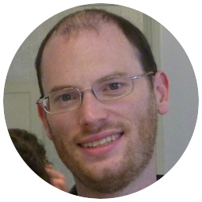
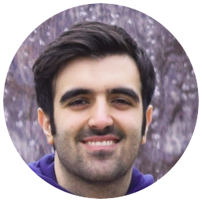

Speakers
Tutorial
Stefan Schmid
Disconnected cooperation in resilient networks
and the algorithmic challenges of local fast re-routing
Disconnected cooperation in resilient networks
and the algorithmic challenges of local fast re-routing
The dependability of distributed systems often critically depends on the underlying communication network, realized by a set of routers. To provide high availability, modern routers support local fast rerouting of flows: routers can be preconfigured with conditional failover rules which define to which port a packet arriving on this incoming port should be forwarded deterministically depending on the status of the incident links only. As routers need to react quickly, they do not have time to learn about remote failures.
My talk revolves around the fundamental question whether and how local fast rerouting mechanisms can be configured such that packets always reach their destination even in the presence of multiple failures, as long as the underlying network is still connected. I will show that this algorithmic problem is related to the field of disconnected cooperation, and offers a number of challenging research questions -- and sometimes surprising results. In particular, I will give an overview of state-of-the-art algorithmic techniques for different realistic graph classes (from dense datacenter topologies to sparse wide-area networks) and discuss lower bounds and impossibility results. While the main focus of the talk will be on deterministic algorithms, we will also take a glimpse at the power of randomization.
My talk revolves around the fundamental question whether and how local fast rerouting mechanisms can be configured such that packets always reach their destination even in the presence of multiple failures, as long as the underlying network is still connected. I will show that this algorithmic problem is related to the field of disconnected cooperation, and offers a number of challenging research questions -- and sometimes surprising results. In particular, I will give an overview of state-of-the-art algorithmic techniques for different realistic graph classes (from dense datacenter topologies to sparse wide-area networks) and discuss lower bounds and impossibility results. While the main focus of the talk will be on deterministic algorithms, we will also take a glimpse at the power of randomization.
Stefan Schmid is a Professor at the Technical University of Berlin, working part-time for the Fraunhofer Institute for Secure Information Technology (SIT). MSc in Computer Science at ETH Zurich in Switzerland (minor: micro/macro economics, internship: CERN) and PhD in the Distributed Computing Group led by Prof. Roger Wattenhofer, also at ETH Zurich. Then postdoc at the Chair for Efficient Algorithms at the Technical University of Munich and at the Chair for Theory of Distributed Systems at the University of Paderborn, in Germany. From 2009 to 2015, he was a senior research scientist at the Telekom Innovation Laboratories (T-Labs) in Berlin, in 2013/14, an INP Visiting Professor at CNRS (LAAS), Toulouse, and in 2014, a Visiting Professor at Université catholique de Louvain (UCL). From 2015 to 2018, Associate Professor at Aalborg University, Denmark, and from 2018 to 2021 Professor at the University of Vienna, Austria. Since 2021, he serves as the Editor-in-Chief of the Bulletin of the European Association of Theoretical Computer Science (EATCS) and since 2019 as Editor of IEEE/ACM Transactions on Networking (ToN). He received the IEEE Communications Society ITC Early Career Award 2016 and an ERC Consolidator Grant 2019, and co-founded the startup company Stacktile supported by Germany's EXIST program.

Patrice Ossona de Mendez
Talk: TBD
Thomas Bläsius
Talk: TBD
Short talk

Michael Dinitz
Datacenter Topologies: Expanders and Beyond
Datacenter Topologies: Expanders and Beyond
Data centers are one of the most important settings in modern computer networking and distributed computing. Due to their importance they are very carefully architected, including the physical topology. While some distributed algorithms can be used "off the shelf" in data centers, the importance of performance and reliability, together with the carefully designed topologies, mean that it is often necessary to tailor our algorithms to the specifics of data center topologies. In this talk I will give an overview of data center topologies, with a focus on proposed next-generation "expander data centers" based on expander graphs. This will hopefully help the distributed algorithms community more easily contribute to the field of data center networking.
Michael is an Associate Professor in the Department of Computer Science at Johns Hopkins University, with a secondary appointment in the Department of Applied Mathematics and Statistics. He received his PhD from Carnegie Mellon University, and was a postdoctoral fellow at the Weizmann Institute of Science before joining JHU. His research is broadly in algorithms, with a focus on approximation algorithms, graph algorithms, distributed algorithms, and the theory of computer networking.

Pedro Montealegre
Talk: TBD

Soheil Behnezhad
Locality and the Stochastic Matching Problem
Locality and the Stochastic Matching Problem
In the stochastic matching problem, we are given an arbitrary graph G, and the goal is to find a matching of an unknown random subgraph G' of G by querying only a small number of edges in G. In this talk, we show how with the machinery of distributed local algorithms, one can analyze a (non-distributed and global) Monte Carlo algorithm for the stochastic matching problem and prove that it obtains an almost maximum size matching with very few queries.
Based on joint works with MohammadTaghi Hajiaghayi and Mahsa Derakhshan (STOC'20, FOCS'20).
Based on joint works with MohammadTaghi Hajiaghayi and Mahsa Derakhshan (STOC'20, FOCS'20).
Soheil Behnezhad is currently a PhD candidate at the University of Maryland. He will join Northeastern University as an Assistant Professor in Fall 2022 and prior to that will spend a year at Stanford as a Motwani Postdoctoral Fellow. Soheil is broadly interested in theoretical computer science with a specific focus on the theoretical foundations of big data algorithms. His works revolve around massively parallel computation (à la MapReduce), streaming algorithms, graph sparsification, and dynamic algorithms, among others. During his PhD, Soheil has spent a year at the Simons Institute of UC Berkeley, a summer at TTI Chicago, and a summer at Google Research.
Andrzej Czygrinow
Talk: TBD
Janne Korhonen
Talk: TBD